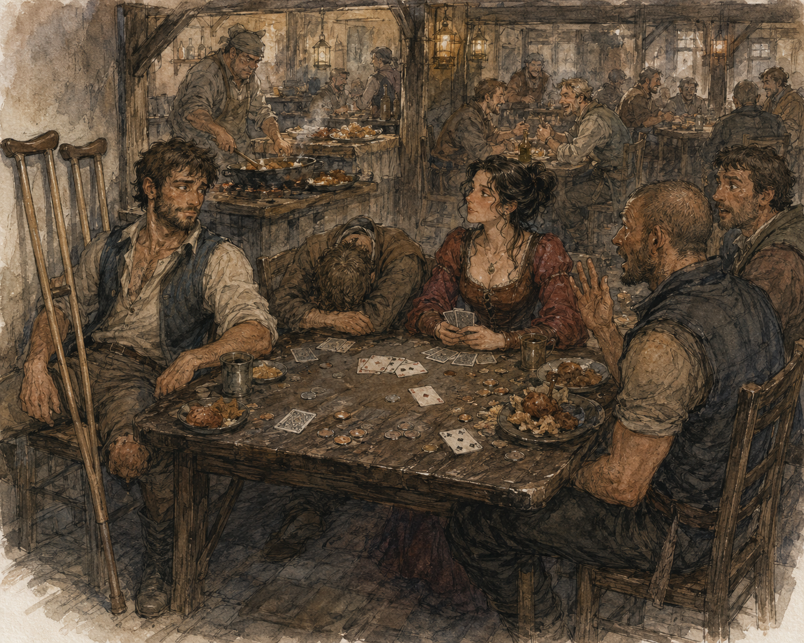
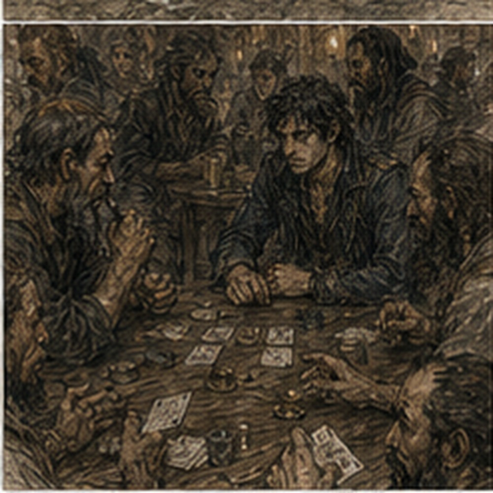

I went back to lose money.
This was voluntary.
Important distinction.
No magic today.
Hessa had said it clearly.
Again.
No draw.
No shaping.
No rehearsal.
No pretending that remembering the charcoal mark was not rehearsal if I sat there trying to reproduce the exact internal sequence.
I had written the report.
Closed the notebook.
Eaten breakfast.
Thumb normal.
Hand normal.
Residual limb baseline.
Then I discovered I had a day.
This was increasingly dangerous.
I considered Pessa.
Wanted competition more.
Different.
So I went to the green door.
Nessa looked at me.
“No work?”
“No.”
“No Hessa?”
“No magic today.”
“Again?”
“Apparently recovery is mostly scheduling.”
She opened the door wider.
“Octavia's here.”
That improved everything.
I stopped.
Nessa smiled.
“You came for cards.”
“I came because this establishment provides several services.”
“You came for cards.”
“Yes.”
“Good.”
Inside, the room smelled like hot oil, old wood, and someone else's bad financial judgment.
Four Doors had already started.
Octavia sat with Jorren and two people I did not know well enough to need names.
Good.
No permanent registry expansion required.
Jorren saw me first.
“Oh no.”
Octavia looked up.
She smiled.
Worse.
“Greg.”
“Octavia.”
“You came back.”
“I was told there were services.”
Nessa, behind me, said, “Cards.”
Betrayal.
Octavia tapped the empty chair.
“Sit.”
I did.
Ordinary chair.
Slightly too low.
Right foot planted.
Residual limb hung clear.
Fine.
Crutches against the wall where I could reach them.
Jorren had his dark-handled food knife on his belt.
Not on the table.
Civilization progressing.
“What are stakes?” I asked.
Octavia said, “Same.”
“Good.”
“Want explanation?”
“No.”
That surprised her.
Good.
I remembered the rules.
Four cards.
Four suits.
Cups.
Nails.
Birds.
Towers.
One hidden.
Exchange row.
Choices that looked simple until people entered them.
People ruined probability.
We dealt.
First hand:
bad.
Not interesting bad.
Two low cards, one middling Tower, one Bird that could become useful if the exchange row loved me.
It did not.
Jorren raised.
I folded.
Octavia looked disappointed.
“What?”
“Nothing.”
“You expected analysis.”
“I expected pain.”
“I can fold.”
“I know.”
Second hand:
better.
Two Cups.
High Nail.
Low Tower.
Exchange row offered a Cup.
Obvious.
Too obvious.
I looked at Octavia.
She was not looking at me.
Interesting.
Last time she had performed boredom.
Or I had decided she performed boredom.
Important difference.
I took the Cup.
Jorren groaned.
“You announced it.”
“What?”
“The Cup.”
“How?”
“You looked at it like food.”
“That is not evidence.”
“It is with you.”
Fuck.
I had infected everyone.
Bet.
One of the unnamed players folded.
Octavia stayed.
Jorren stayed.
Hidden card opened.
Nail.
Not useful.
Octavia raised.
I looked at her hand.
Not cards.
Hand.
Still.
Too still?
No.
Stop.
Cards.
What do I actually have?
Three Cups.
Strong enough.
Not invincible.
Jorren could be bluffing.
Octavia could be waiting.
I stayed.
Jorren folded.
Octavia raised again.
There.
Last time I would have built three models:
She knows I know she performs boredom.
She knows I altered my tells.
She knows I know she knows.
Old men writing books.
No.
I stayed.
She turned over four Nails.
I lost.
“Good hand,” I said.
Octavia stared.
“What?”
“Nothing.”
“You wanted me to explain.”
“A little.”
“No.”
Jorren leaned back.
“He's learned.”
“I have not.”
“Less fun.”
Third hand:
garbage.
I folded.
Fourth:
also garbage.
Folded.
Octavia said, “You're doing something.”
“I am losing.”
“No. You're being quiet.”
“That is free.”
“Not for you.”
“Personal development.”
“Suspicious.”
Fifth hand:
excellent.
High Birds.
Pair of Towers.
Exchange row made Birds better.
I wanted to smile.
Did not.
That itself became a performance.
I relaxed my face.
Too consciously.
Octavia watched.
I scratched my jaw.
Then stopped because scratching my jaw had previously been a fake tell.
Now not scratching might be a tell.
This was stupid.
Jorren said, “He's trapped.”
“I am thinking.”
“You're making eyebrows.”
“I have eyebrows.”
“Too many.”
I looked at my cards.
Strong.
Just play.
I raised.
One unnamed player stayed.
Octavia folded immediately.
That irritated me.
Jorren stayed.
Exchange.
I improved.
Raised.
Unnamed folded.
Jorren stayed.
Hidden card.
Bird.
Excellent.
Raised.
Jorren folded.
I won.
No bluff.
No manipulation.
No cleverness.
Good cards.
I collected bits.
Octavia said, “Show.”
“No.”
She smiled.
“You don't have to.”
“I know.”
“You want me to think you bluffed.”
“No.”
“You are lying.”
“Maybe.”
She pointed.
“There.”
“What?”
“You used maybe.”
“Hessa has damaged me.”
Jorren said, “Who?”
“Magic woman.”
“She has a name.”
“I know.”
“You said who like you didn't.”
“Greg.”
“Fine.”
Sixth hand:
Before the cards were dealt, Octavia tapped the table.
“Question.”
“No.”
“I haven't asked it.”
“Preventive.”
“Last time, when you scratched your jaw.”
I stared at her.
“What about it?”
“Did you think I believed the scratch?”
I hated this already.
“No.”
“That was too fast.”
“I thought you might believe that I wanted you to notice the scratch.”
“Ah.”
Jorren leaned in.
“This is going to become unbearable.”
Octavia ignored him.
“I noticed because you scratched the exact same spot twice.”
“That is not what happened.”
“It is.”
“Approximately.”
“You looked at me after the second one.”
“I was observing whether you noticed.”
“Yes.”
“So it worked.”
“No.”
I stopped.
“What?”
“You think because I noticed the thing, I believed the message attached to the thing.”
“That was not required.”
“What was required?”
“That you update your model of me.”
“I did.”
There.
Victory.
Small.
Then she continued.
“I updated it to: Greg is going to do something irritating.”

Jorren put his forehead on the table.
I stared at her.
“That is not a useful model.”
“It has been excellent.”
The two unnamed players were smiling now.
Traitors.
I said, “You still lost the hand.”
“Yes.”
“So the manipulation succeeded.”
“Maybe.”
I closed my eyes.
“Hessa.”
“Still don't know who that is.”
“Magic woman.”
“She has a name,” Jorren said.
“Fuck both of you.”
Octavia dealt.
This was useful.
Not because it revealed the correct theory.
It revealed there had never been a single clean channel from my intended signal to her interpretation.
I had done something.
She had noticed something.
She had inferred something else.
Then she had still made a decision.
The hand had resolved one way.
Those were not one event.
Dangerous thought.
Interesting.
I put it away.
Cards first.
I got clever.
Mistake.
I deliberately took a weak exchange early to imply strength concealed behind indifference.
This was already too many words.
Octavia called.
Jorren called.
I continued because backing out would make the first choice meaningless.
This is a terrible reason to continue anything involving money.
Hidden card did not save me.
Octavia raised.
I raised back.
Jorren left.
Octavia stayed.
I had nothing.
Not literally.
Cards existed.
Badly.
I looked at her.
She looked at me.
No boredom.
No smile.
No obvious interest.
Blank.
That was new.
Or I had not noticed before.
I raised again.
She called.
I lost.
Badly.
She showed middling cards.
Not even great.
I stared.
“You called that?”
“Yes.”
“Why?”
“You were too pleased with your first bad decision.”
Jorren made a noise like he had been stabbed by joy.
I looked at Octavia.
“What does that mean?”
“You took the wrong card and then looked satisfied.”
“I did not.”
“You did.”
“That could mean I wanted you to think I was satisfied.”
“Yes.”
“So why call?”
“Because last time you discovered one trick and became very proud.”
“I discovered several.”
“No.”
“One.”
“Maybe one.”
“Hessa again.”
“Who is Hessa?”
“Magic woman.”
“She has a name.”
I turned to Jorren.
“You started this.”
He was laughing too hard.
Octavia gathered the bits.
“That hand cost you.”
“I know.”
“Want to explain why you did it?”
“Yes.”
She waited.
I looked at her.
I really wanted to.
The entire mechanism was available.
Weak exchange.
False satisfaction.
Expected read.
Recursive correction.
It had failed because she did not interpret the signal the way I expected.
Or because she did and then ignored it.
Or because she guessed.
Or because she knew I was the kind of idiot who would turn one successful bluff into a personal research field.
I said, “No.”
Octavia's smile widened.
“That hurt.”
“Extremely.”
“Good.”
Seventh hand.
Then eighth.
Then ninth.
I lost two.
Won one.
Not enough.
Jorren left the table halfway through to buy fried dough from Nessa.
He came back with six pieces.
“Why six?”
“Because five looked lonely.”
That was not math.
He handed me one.
Oil.
Sugar.
Hot.
Excellent.
I ate while playing.
This improved decision quality by no measurable amount.
Octavia stole one from him.
He protested.
She had already eaten half.
Independent systems.
Ninth-and-a-half hand did not exist.
I mention this because after losing the ninth, I asked to see the discarded exchange row.
Octavia slapped my hand away.
Not hard.
“No postmortem.”
“I want to know whether the Tower would have changed it.”
“The hand is over.”
“That does not erase information.”
“It erases access.”
“Why?”
“Because I said so.”
“Rules?”
“House.”
I looked at Nessa.
She was three tables away.

Without looking at us, she raised one finger.
“House.”
Conspiracy.
I sat back.
My right shoulder was fine.
Hands fine.
The chair had become less comfortable because I had been sitting long enough to notice it.
I shifted.
Right foot farther under me.
Residual limb clear.
Better.
Octavia watched the adjustment, then deliberately looked away.
That was considerate.
Or strategic.
Or neither.
I refused to investigate.
Personal record.
Tenth hand:
I had mediocre cards.
Octavia had been raising aggressively for three hands.
Pattern?
Maybe.
No.
Evidence.
Three hands was not enough.
But people were not coins.
Also not not coins.
I hated games.
Loved games.
I watched Jorren.
He chewed.
No help.
Nessa was talking to someone at the counter.
Room noise.
Table scratches.
Bits.
Cards.
My right hand felt normal.
I noticed that.
Then became angry at myself for noticing.
No testing.
Fine.
I played the hand.
Not strategically brilliant.
I stayed longer than I should have.
Lost.
Octavia said, “You looked somewhere else.”
“What?”
“Halfway through.”
“I was thinking.”
“About cards?”
“No.”
“Then why stay?”
Good question.
Because I came back to the cards after thinking about my hand and did not reconstruct the hand state carefully enough.
That was the truth.
I said, “Because I forgot what you were doing.”
Jorren stopped chewing.
Octavia blinked.
“What?”
“I lost track.”
“You?”
“Yes.”
She looked delighted.
This was insulting.
“You're human.”
“Occasionally.”
“Expensive discovery.”
“How much am I down?”
Jorren counted my bits.
“Enough.”
“Specific.”
“No.”
I counted.
Down.
Not terrible.
More than I wanted.
Good.
That meant stakes still mattered.
I considered leaving.
Wanted one more hand.
Danger.
Why?
To recover losses?
Bad.
To win final hand?
Also bad.
Because I wanted one more?
Better.
Maybe.
I checked.
Yes.
One more.
“I'll play one.”
Octavia said, “Then leave?”
“Yes.”
“Even if you lose?”
“Yes.”
“Even if you almost get even?”
“Yes.”
“Even if I call you coward?”
“Yes.”
“Coward.”
“Not yet.”
Last hand.
Cards:
two Towers.
One high Cup.
One worthless Bird.
Exchange row:
Tower.
There.
Strong direction.
I took it.
Octavia watched.
I ignored her.
Jorren stayed.
One unnamed player stayed.
Other folded.
Next exchange row gave me nothing.
Jorren took Nail.
Octavia took Bird.
Unnamed took Cup.
I stayed.
Hidden card:
Tower.
Four Towers.
Very strong.
My body reacted.
Not magic.
Simple joy.
Heart.
Face.
Fuck.
Octavia saw something.
Of course.
I could try to hide.
Too late.
Could manufacture uncertainty.
Too late.
Could perform overconfidence to make real confidence look fake.
This was exactly how stupidity grew.
I raised.
Jorren stared at me.
Folded.
Unnamed stayed.
Octavia stayed.
Raised.
I raised back.
Unnamed folded.
Octavia looked at me.
“You have it.”
“Maybe.”
She laughed.
“Hessa.”
“Apparently.”
She folded.
I won.
I showed.
Not required.
Wanted to.
Four Towers.
Octavia groaned.
“You showed?”
“Yes.”
“Why?”
“I wanted to.”
“That is disgusting.”
Jorren said, “Growth.”
“Fuck both of you.”
I collected.
Still down overall.
Less.
Good enough.
I stood.
Octavia said, “Sit.”
“No.”
“You said one.”
“That was one.”
“You won.”
“Yes.”
“So now you're warm.”
“Yes.”
“Best time.”
“No.”
“Coward.”
“Yes.”
She narrowed her eyes.
That had not worked.
Interesting.
I put weight through the crutches.
Hands fine.
Residual limb fine.
Right foot fine.
“Tomorrow?”
Octavia asked.
“No magic tomorrow?”
“Magic tomorrow?”
“No. Today is no magic. Tomorrow Hessa.”
“Then after?”
“I don't know.”
“Good.”
I looked at her.
“You did that intentionally.”
“What?”
“Used good.”
“Maybe.”
Terrible woman.
Jorren stood too.
“Food?”
“We ate.”
“That was table food.”
“What is table food?”
“Food eaten at table.”
“By that definition all food can become table food.”
“Exactly.”
He had me.
We left.
Outside, late afternoon had softened the street.
Not quiet.
Carrow did not do quiet correctly.
But slower.
I was down bits.
Not many.
Enough to feel.
I liked that.
Winning without cost was not competition.
Losing without cost was not either.
Jorren walked beside me.
“Octavia owns you.”
“No.”
“She does.”
“I won the last hand.”
“You lost money.”
“Different metric.”
“Primary metric.”
“Not necessarily.”
“You went there to lose money.”
“That was rhetorical.”
“Was it?”
I thought.
Maybe.
Hessa again.
Fuck.
We bought skewers.
Meat.
Onion.
Pepper.
Not LIAR.
Jorren had learned one thing.
We sat near the dry fountain.
Same place as before.
He used the new knife to cut a piece of onion off the skewer.
“That is unnecessary.”
“It feels good.”
There.
Fine.
I ate.
After a while he said, “You going to train again?”
“Cards?”
“Pessa.”
“I don't know.”
“Want to?”
“Not today.”
“Today is almost over.”
“Then excellent timing.”
He nodded.
No lesson.
Good.
“Magic tomorrow?”
“Hessa assessment.”
“Thumb?”
“Probably not.”
“Hand?”
“Maybe.”
He looked at me.
I pointed.
“Do not.”
“Didn't say anything.”
“You were going to.”
“I was going to say maybe.”
“Exactly.”
We ate.
A group of Bronze adventurers crossed the square.
I recognized two faces.
Not names.
One had a spear.
One carried a shield.
My attention followed them.
Physical competence.
Still wanted.
Not today.
That did not reduce the want.
Useful.
I looked back at Jorren.
He had taken my last onion.
“You stole that.”
“You were distracted.”
“That is not ownership transfer.”
“It is at table.”
“This is not a table.”
He looked at the fountain ledge.
“Outdoor table.”
“No.”
He ate it.
I considered violence.
No.
Pessa would object to inventing drill.
I laughed.
“What?”
“Nothing.”
“Useful?”
“No.”
“Good.”
Everyone had stolen the keeper now.
We walked back toward the Guild.
At the corner, Octavia was ahead of us.
She had apparently left by another door or before us.
Independent schedule.
She was talking to a freight clerk I recognized by coat, not identity.
Working.
Not thinking about cards.
Not thinking about me.
Probably.
I liked that.
Last time I had beaten one hand and nearly turned it into a theory of human signaling.
Today she had taken my money because she adapted.
Then I had won one honest obvious hand because the cards were good.
Both counted.
Neither meant much beyond the table.
At the Guild door, Jorren went inside.
I did not.
“Where?”
“Home.”
“Why?”
“I want to.”
He nodded.
That easy.
I walked back.
No thumb tingling.
No magic.
No shaping practice.
No mental charcoal sequence.
I had spent the day competing badly on purpose.
Not badly.
Competitively.
There was a difference.
Upstairs, I emptied my pockets.
Counted the lost bits once.
Only once.
Wrote nothing about cards.
That felt correct.
The notebook remained closed.
Tomorrow belonged to Hessa.
Today belonged to the table.
Octavia had most of my money to prove it.